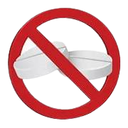
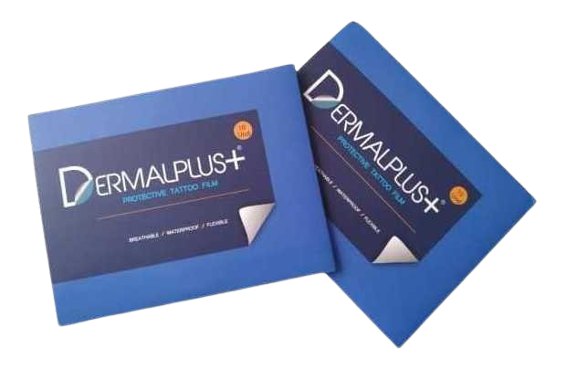
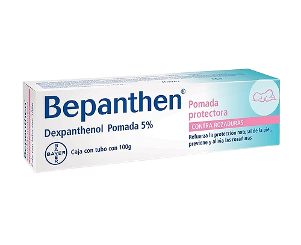
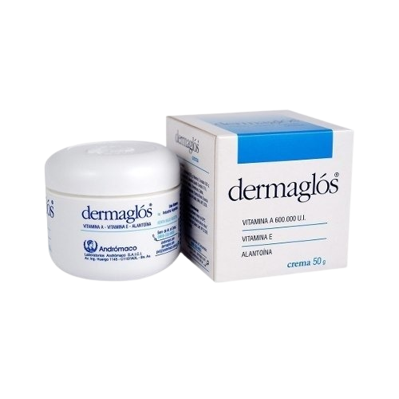

- Para cuidar tu tatuaje, lo ideal es que seas higienico/a y mantengas tu piel lo más estéril posible. Lávalo con jabón neutro, antibacterial, unas 2 a tres veces por día; y procura que la piel tenga un tiempo de secado antes de aplicar la crema.
- Deja el film o parche por los dias recomendados; cambiándolo cada cantidad de horas especificadas.Una vez finalizada esta etapa de protección, utiliza los ungüentos especificados por tu tatuador.
- Si tienes alguna duda, o quieres saber más acerca del cuidado de tu tattoo, mira este video con la información completa: Procedimiento de Tatuajes by Fonsink.
- Al curar, los tatuajes hacen cáscara. Si el tuyo no presenta una cáscara "saludable", está enrojecido o "afiebrado", suspende la crema y consulta un dermatólogo.
- Si tu tatuaje segrega pus, u otros líquidos, asiste con urgencia a tu dermatólogo. Es importante NO AUTOMEDICARSE, ante la duda consulta con un médico o especialista.
Aquí puedes ver un poco más acerca de tatuajes infectados, cómo tratarlos y qué hacer en casos de emergencia: Ejemplos de Tatuaje mal Curado.
- Cubre tu tatuaje con film o parche un mínimo de dos dias luego de tatuarte! Así, se elimina la tinta en exceso y se protege de infecciones primarias.
- Es muy importante utilizar cremas de calidad, SIN PERFUMES, para evitar irritaciones y/o ardor. Yo recomiendo Dermaglos ó Bepanthen, ya que son antisépticas, tienen vitamina A y son más económicas que aquellas "diseñadas para curar tattoos".
- Al lavar tu tatuaje, procura que sea con agua fría. El agua caliente lastimará aún más la piel, y puede resultar en esto:


- NO EXPONER EL TATUAJE AL SOL HASTA QUE CURE POR COMPLETO. Si lo expones al sol, hará que cure mal, ya que los rayos UV queman la piel y la tinta en ella. Se verá como resultado un tatuaje menos nítido, e incluso podría desvanecerse el pigmento parcial o completamente. ¡Utiliza protector solar, hidrata tu piel y ponte prendas protectoras!

 